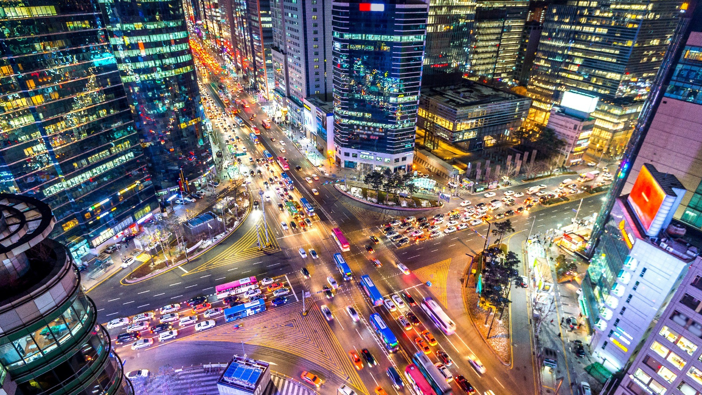
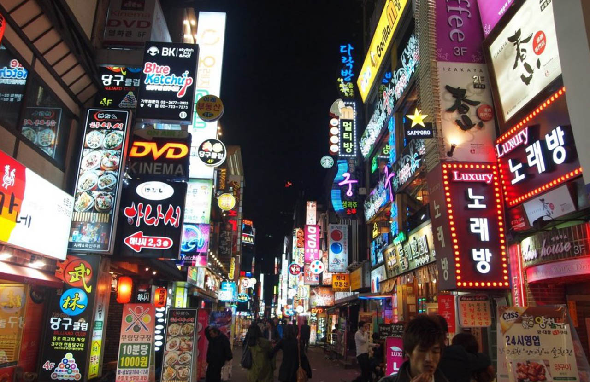
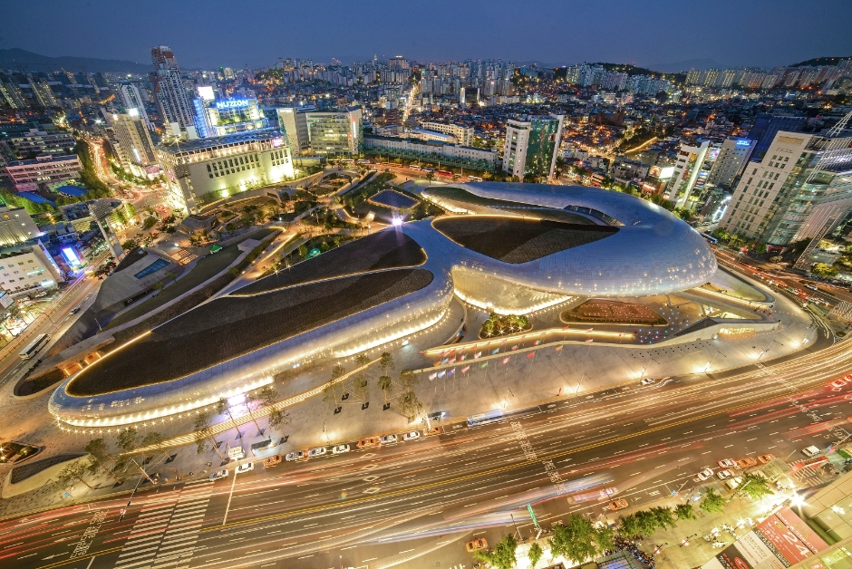
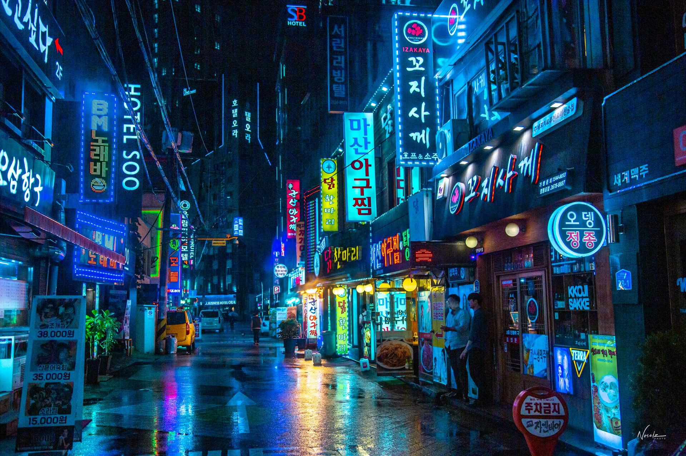

La Ciudad de las Pantallas
Seúl es un epicentro de innovación donde el avance tecnológico y la vida urbana se combinan en un espectáculo visual impresionante. Desde calles cubiertas por pantallas LED hasta inteligencia artificial en la vida cotidiana, esta metrópolis nunca deja de evolucionar.
El distrito de Gangnam brilla con luces de neón, mientras que en Hongdae la cultura digital y el entretenimiento marcan el ritmo de la ciudad.
📍 Ubicación y Mapa
Seúl, una ciudad que refleja el futuro con su infraestructura tecnológica y digital.
- ⚡ Gangnam - Distrito de lujo y tecnología avanzada.
- 🌆 Hongdae - Centro de cultura urbana y entretenimiento digital.
- 💠 Dongdaemun Design Plaza - Arquitectura futurista y creatividad.
Mapa interactivo de Seúl
🚀 Innovación y Tecnología
Seúl lidera el mundo en avances tecnológicos y digitalización:
- 🤖 Robótica y AI - Seúl está a la vanguardia de la inteligencia artificial y robótica avanzada.
- 🛸 5G ultra rápido - Red de internet con una de las velocidades más altas del mundo.
- 🔮 Ciudades inteligentes - Infraestructura conectada con sensores y automatización.
🏙️ Cultura Urbana y Digital
Seúl combina tecnología con entretenimiento y experiencias digitales únicas:
- 🎰 Arcades de última generación - Experiencias de VR y gaming avanzado.
- 📱 Pagos digitales - La economía basada en pagos móviles sin efectivo.
- 🚀 Eventos y conciertos holográficos - Conciertos con tecnología de hologramas y realidad aumentada.
📷 Galería
Vista nocturna de Seúl
Gangnam iluminado
Hongdae y cultura digital
Dongdaemun Design Plaza futurista
Calles llenas de luces neón en Seúl